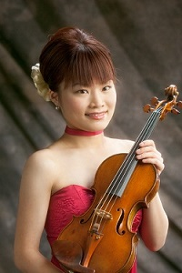

筒井 志帆（つつい しほ）
高松高校 平成14年卒
(Last updated:2019.11)
プロフィール

1984年1月31日 香川県高松市牟礼町に生まれる
4歳よりヴァイオリンを始める。
2002年 香川県立高松高等学校卒業
2002年 東京藝術大学器楽科ヴァイオリン専攻入学
2006年 同卒業
2007年 群馬交響楽団入団
ヴァイオリンを藤野妙子、服部芳子、岡山潔、漆原朝子の各氏に師事。
2000年第17回香川ジュニア音楽コンクール･金賞受賞、同年第42回全四国音楽コンクール高校の部最優秀賞受賞。
第20回アフィニス夏の音楽祭、第30回草津夏期国際音楽アカデミーに参加。
第36回全国アマチュアオーケストラフェスティバル高松大会、UDON楽カウントダウン高松コンサート等においてコンサートミストレス、ソリストを務める。
2014年 ドイツ・ハンブルクに留学。
Stefan Wagner氏（NDRエルプフィルハーモニー管弦楽団コンサートマスター）及びAdrian Iliescu氏（ハンブルク交響楽団コンサートマスター）に師事。
ハンブルク領事館主催「Dankes Konzert～Ihre Freude ist meine Freude」でコンサートミストレスを務める。
2015年 群馬交響楽団に復帰。
公演活動
オーケストラの他、室内楽やソロ活動も行っている。
2018年 アンサンブル神戸と共演。
2013年度香川県文化芸術新人賞受賞。
高松市観光大使を務める。